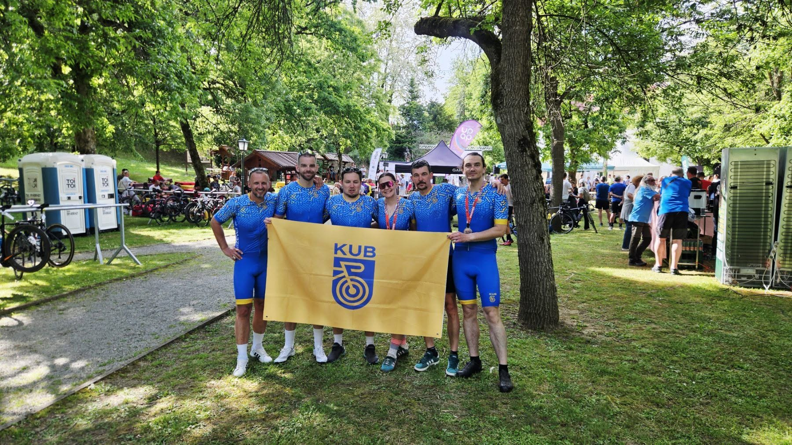

O nama
Udruga je osnovana kako bi bicikl postao svakodnevno i sigurno prijevozno sredstvo u našem gradu.
Naši članovi redovito sudjeluju u biciklističkim događanjima, organiziraju izlete i radionice te promiču biciklizam kao zdrav i ekološki način kretanja.

Naša misija
Promicati biciklizam kao zdrav, jeftin i ekološki način kretanja te stvoriti zajednicu u kojoj se svatko, bez obzira na kondiciju, osjeća dobrodošlo.
Kratka povijest
- Prvi zajednički izlet nekoliko prijatelja.
- Službeno osnivanje udruge i prva skupština.
- Otvaranje klupske radionice za popravak bicikala.
- Prva škola sigurne vožnje za osnovnoškolce.
Članstvo
Tko može postati član
Članom može postati svatko tko voli bicikl; maloljetnici uz suglasnost roditelja.
Što član dobiva
- sudjelovanje na svim izletima
- korištenje klupske radionice i alata
- popust kod partnerskih servisa